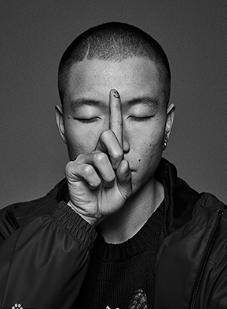

选择影师

陈漫
+陈墨墨
-张悦
-尤奕
-尹超
-童梦
-陈漫 CHENMAN
陈漫（ChenMan,1980年出生于北京，中国时尚摄影师、视觉艺术家，毕业于中央美术学院 。2003年，陈漫开始为《青年视觉》杂志拍摄封面 ；之后，凭借一系列为《青年视觉》拍摄的作品，在时尚圈崭露头角。2011年4月23日，在北京今日美术馆推出个人摄影装置展 ；11月，“陈漫视觉艺术展”在上海当代艺术馆展出。2012年，为《i-D》杂志创作了12 幅名为 “Whatever the Weather” 的系列作品。2014年7月1日，与张靓颖第三次合作封面设计的《第七感》封面正式公布。
2015年9月，陈漫的作品《四大天王：春》和《祖国万岁》被旧金山亚洲艺术博物馆永久收藏。2016年7月，陈漫以导演身份签约加盟CAA。2017年，陈漫被选入“全球青年领袖”名单；同年，她被授予世界卫生组织中国控烟倡导者的称号。
陈墨墨 CHENMAN
陈墨墨（ChenMan,1980年出生于北京，中国时尚摄影师、视觉艺术家，毕业于中央美术学院 。2003年，陈漫开始为《青年视觉》杂志拍摄封面 ；之后，凭借一系列为《青年视觉》拍摄的作品，在时尚圈崭露头角。2011年4月23日，在北京今日美术馆推出个人摄影装置展 ；11月，“陈漫视觉艺术展”在上海当代艺术馆展出。2012年，为《i-D》杂志创作了12 幅名为 “Whatever the Weather” 的系列作品。2014年7月1日，与张靓颖第三次合作封面设计的《第七感》封面正式公布。
2015年9月，陈漫的作品《四大天王：春》和《祖国万岁》被旧金山亚洲艺术博物馆永久收藏。2016年7月，陈漫以导演身份签约加盟CAA。2017年，陈漫被选入“全球青年领袖”名单；同年，她被授予世界卫生组织中国控烟倡导者的称号。
张悦 CHENMAN
张悦（ChenMan,1980年出生于北京，中国时尚摄影师、视觉艺术家，毕业于中央美术学院 。2003年，陈漫开始为《青年视觉》杂志拍摄封面 ；之后，凭借一系列为《青年视觉》拍摄的作品，在时尚圈崭露头角。2011年4月23日，在北京今日美术馆推出个人摄影装置展 ；11月，“陈漫视觉艺术展”在上海当代艺术馆展出。2012年，为《i-D》杂志创作了12 幅名为 “Whatever the Weather” 的系列作品。2014年7月1日，与张靓颖第三次合作封面设计的《第七感》封面正式公布。
2015年9月，陈漫的作品《四大天王：春》和《祖国万岁》被旧金山亚洲艺术博物馆永久收藏。2016年7月，陈漫以导演身份签约加盟CAA。2017年，陈漫被选入“全球青年领袖”名单；同年，她被授予世界卫生组织中国控烟倡导者的称号。

尤奕 CHENMAN
尤奕（ChenMan,1980年出生于北京，中国时尚摄影师、视觉艺术家，毕业于中央美术学院 。2003年，陈漫开始为《青年视觉》杂志拍摄封面 ；之后，凭借一系列为《青年视觉》拍摄的作品，在时尚圈崭露头角。2011年4月23日，在北京今日美术馆推出个人摄影装置展 ；11月，“陈漫视觉艺术展”在上海当代艺术馆展出。2012年，为《i-D》杂志创作了12 幅名为 “Whatever the Weather” 的系列作品。2014年7月1日，与张靓颖第三次合作封面设计的《第七感》封面正式公布。
2015年9月，陈漫的作品《四大天王：春》和《祖国万岁》被旧金山亚洲艺术博物馆永久收藏。2016年7月，陈漫以导演身份签约加盟CAA。2017年，陈漫被选入“全球青年领袖”名单；同年，她被授予世界卫生组织中国控烟倡导者的称号。

尹超 CHENMAN
尹超（ChenMan,1980年出生于北京，中国时尚摄影师、视觉艺术家，毕业于中央美术学院 。2003年，陈漫开始为《青年视觉》杂志拍摄封面 ；之后，凭借一系列为《青年视觉》拍摄的作品，在时尚圈崭露头角。2011年4月23日，在北京今日美术馆推出个人摄影装置展 ；11月，“陈漫视觉艺术展”在上海当代艺术馆展出。2012年，为《i-D》杂志创作了12 幅名为 “Whatever the Weather” 的系列作品。2014年7月1日，与张靓颖第三次合作封面设计的《第七感》封面正式公布。
2015年9月，陈漫的作品《四大天王：春》和《祖国万岁》被旧金山亚洲艺术博物馆永久收藏。2016年7月，陈漫以导演身份签约加盟CAA。2017年，陈漫被选入“全球青年领袖”名单；同年，她被授予世界卫生组织中国控烟倡导者的称号。

童梦 CHENMAN
童梦（ChenMan,1980年出生于北京，中国时尚摄影师、视觉艺术家，毕业于中央美术学院 。2003年，陈漫开始为《青年视觉》杂志拍摄封面 ；之后，凭借一系列为《青年视觉》拍摄的作品，在时尚圈崭露头角。2011年4月23日，在北京今日美术馆推出个人摄影装置展 ；11月，“陈漫视觉艺术展”在上海当代艺术馆展出。2012年，为《i-D》杂志创作了12 幅名为 “Whatever the Weather” 的系列作品。2014年7月1日，与张靓颖第三次合作封面设计的《第七感》封面正式公布。
2015年9月，陈漫的作品《四大天王：春》和《祖国万岁》被旧金山亚洲艺术博物馆永久收藏。2016年7月，陈漫以导演身份签约加盟CAA。2017年，陈漫被选入“全球青年领袖”名单；同年，她被授予世界卫生组织中国控烟倡导者的称号。

作品展示 EXHIBITION OF WORKS
2014.07.22
2014.08.04
2014.09.21

2014.10.17